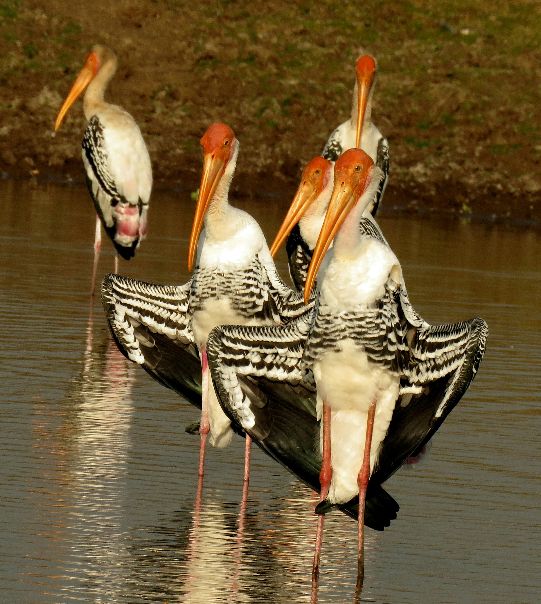

The Painted Stork is a large and striking wetland bird with a long slightly curved bill, a mostly white body, black-and-white wings, and attractive pink markings on the lower body and legs. It is commonly found around lakes, marshes, flooded fields, shallow wetlands, and other areas where fish and aquatic prey are abundant. Painted Storks often feed by moving their partly open bills through shallow water, using touch to detect prey such as fish and other aquatic animals. They frequently gather in groups, particularly at productive feeding sites. Their large size and distinctive pattern make them highly conspicuous birds in open wetlands.
Family: Ciconiidae